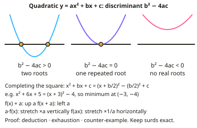

A-level Maths Year 12 · Topic A
Pure mathematics
Pure mathematics at AS level is the core toolkit for every other part of A-level Maths.
We will review algebra and proof, coordinate geometry and circles, and trigonometry with exponentials and logarithms.
Then we meet calculus, with differentiation and integration, and finish with vectors and the binomial expansion.
- 5 subtopics
- 230 questions
- Free: A1 notes and 10 questions
In this topic
- A1Algebra, functions and proofFree below · 30 questions
- A2Coordinate geometry and circlesOpen in Full Marks · 49 questions
- A3Trigonometry, exponentials and logarithmsOpen in Full Marks · 54 questions
- A4Differentiation and integrationOpen in Full Marks · 48 questions
- A5Vectors and binomial expansionOpen in Full Marks · 49 questions
A1 · Free notes
Algebra, functions and proof

Key points
- Completing the square: x² + bx + c = (x + b/2)² − (b/2)² + c, giving the turning point of a quadratic.
- The discriminant b² − 4ac shows the number of real roots: positive gives two, zero gives one repeated root, negative gives none.
- Proof: deduction (direct algebraic argument), exhaustion (checking all cases), and disproof by counter-example.
- Graph transformations: y = f(x) + a (translate up a), y = f(x + a) (translate left a), y = af(x) (stretch vertically ×a), y = f(ax) (stretch horizontally ×1/a).
- Partial results with surds and indices are kept in exact form where possible.
In more detail
- Worked completing the square: x² − 6x + 11 = (x − 3)² + 2, so the minimum point is (3, 2) and there are no real roots.
- Worked discriminant: kx² + 4x + 1 = 0 has equal roots when 16 − 4k = 0 → k = 4.
- Worked deduction: two consecutive odd numbers: (2n − 1) + (2n + 1) = 4n, so their sum is always a multiple of 4.
- Worked exhaustion: n² + n = n(n + 1); if n is even the product is even, and if n is odd then n + 1 is even, so n² + n is always even.
- Worked counter-example: "2ⁿ − 1 is prime for all n ≥ 2" fails at n = 4, since 15 = 3 × 5.
Practice
Algebra, functions and proof: 10 questions
Pick an answer to check it, or open the answer for the explanation.
1. If b² − 4ac < 0, the quadratic has:
- Two real roots
- One repeated root
- No real roots
- Three roots
Show answer
C: No real roots. A negative discriminant means the graph never crosses the x-axis.
2. Write x² + 6x + 5 in completed square form
- (x + 3)² − 4
- (x + 3)² + 4
- (x + 6)² − 31
- (x + 3)² − 14
Show answer
A: (x + 3)² − 4. (x + 3)² = x² + 6x + 9, so subtract 4 to get 5.
3. What transformation maps y = f(x) to y = f(x + 2)?
- Translation 2 right
- Translation 2 left
- Translation 2 up
- Stretch factor 2
Show answer
B: Translation 2 left. Replacing x with x + 2 shifts the graph left.
4. How can a statement be disproved?
- By proving one case works
- By finding a counter-example
- By exhaustion only
- It cannot be disproved
Show answer
B: By finding a counter-example. A single counter-example is enough to disprove a general claim.
5. Solve x² − 5x + 6 = 0
- x = 1 or 6
- x = 2 or 3
- x = −2 or −3
- x = 5 or 6
Show answer
B: x = 2 or 3. (x − 2)(x − 3) = 0.
6. What is the discriminant of x² + 4x + 4 = 0?
- 0
- 4
- 16
- −16
Show answer
A: 0. 16 − 16 = 0, so there is one repeated root.
7. What transformation maps y = f(x) to y = 3f(x)?
- Translation 3 up
- Vertical stretch, scale factor 3
- Horizontal stretch, factor 3
- Reflection in the x-axis
Show answer
B: Vertical stretch, scale factor 3. All y values are multiplied by 3.
8. What is the turning point of y = (x − 2)² + 5?
- (2, 5)
- (−2, 5)
- (2, −5)
- (5, 2)
Show answer
A: (2, 5). Completed square form gives the vertex directly.
9. How many real roots does the equation 2x² − 3x + 5 = 0 have?
- One (repeated)
- None
- Two distinct
- Two, one of them negative
Show answer
B: None. The discriminant is (−3)² − 4(2)(5) = 9 − 40 = −31. This is negative, so the quadratic has no real roots.
10. For which values of k does x² + kx + 9 = 0 have a repeated root?
- k = ±6
- k = ±3
- k = 6 only
- k = ±36
Show answer
A: k = ±6. A repeated root needs b² − 4ac = 0, so k² − 36 = 0. Then k² = 36, which gives k = 6 or k = −6.
Keep going in Full Marks
Full Marks has 30 questions on Algebra, functions and proof (20 more than here), set out in practice levels. You also get notes and 3D models for all 5 subtopics of Pure mathematics, plus games, timed exams and past papers.
On your exam board
- AQATopic 2: Algebra and functions, Topic 3: Coordinate geometry in the (x, y) plane, Topic 5: Trigonometry, Topic 7: Differentiation, Topic 9: Vectors
- OCR ATopic 2: Algebra and functions, Topic 3: Coordinate geometry in the (x, y) plane, Topic 5: Trigonometry, Topic 7: Differentiation, Topic 9: Vectors
- OCR BTopic 2: Algebra and functions, Topic 3: Coordinate geometry in the (x, y) plane, Topic 5: Trigonometry, Topic 7: Differentiation, Topic 9: Vectors
- EdexcelTopic 2: Algebra and functions, Topic 3: Coordinate geometry in the (x, y) plane, Topic 5: Trigonometry, Topic 7: Differentiation, Topic 9: Vectors
- CambridgeTopic 1.3: Coordinate geometry, Topic 1.5: Trigonometry, Topic 1.7: Differentiation